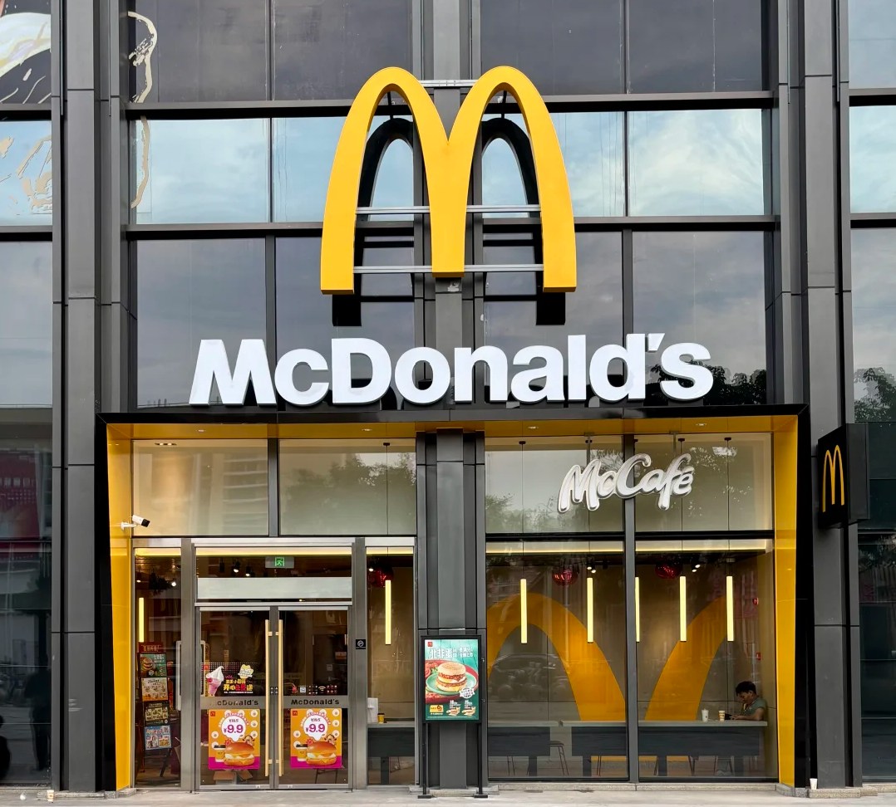
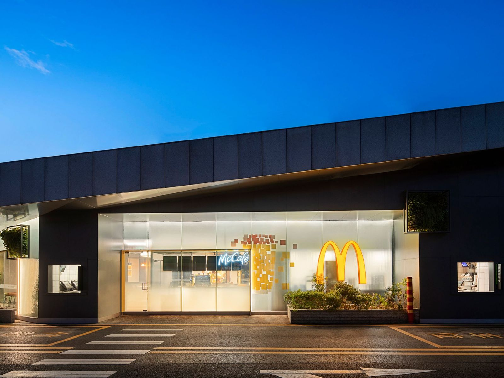
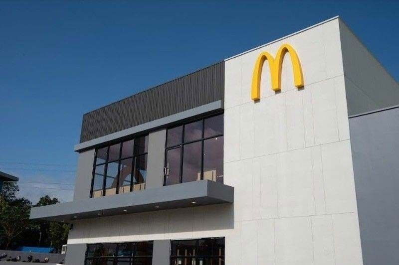

同品牌其他门店示意图福州麦当劳国宾大道DT餐厅1078 × 972 · M01按用户要求使用其他麦当劳门店照片，作为同品牌封面示意；不是本点位门店实拍。未裁剪、未重绘。来源网页 · 查看原图
同品牌其他门店示意图福州麦当劳上街镇国宾大道餐厅1600 × 1200 · M02按用户要求使用其他麦当劳门店照片，作为同品牌封面示意；不是本点位门店实拍。未裁剪、未重绘。来源网页 · 查看原图
同品牌其他门店示意图福州麦当劳闽侯上街国宾大道(梅园酒店)餐厅800 × 532 · M03按用户要求使用其他麦当劳门店照片，作为同品牌封面示意；不是本点位门店实拍。未裁剪、未重绘。来源网页 · 查看原图